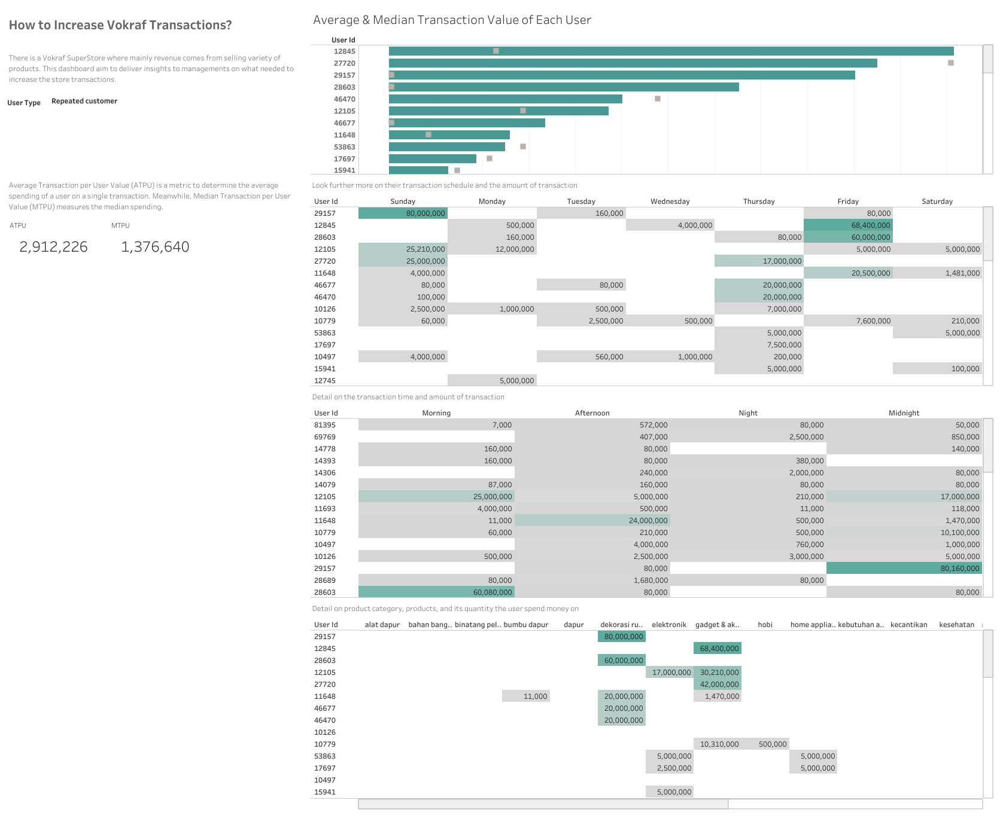

Vokraf Customer Segmentation
Contex
This project is a data case study for the interview I apply for at Vokraf Company - an online learning platform for creative industry in Indonesia. The raw data is given along with the assesment to determine the Average Transaction Per User Value (ATPU) and Median Transaction per User Value (MTPU). The goal is to asses the data along with metrics to give insights on how to increase the transaction.
Data Preparation
I conducted data cleaning using Excel on the raw dataset. The steps included removing trailing spaces in columns, splitting the timestamp into separate date and time columns, and standardizing the price column to ensure consistent data type. After that, I finished the null values using the XLOOKUP function, and last to remove the duplicate rows to refine the dataset.
Exploratory Analysis
During exploratory analysis, I observed that the users in the dataset fall into two distinct categories: "First-time customer" and "Repeated customer" who conduct multiple transactions. It is important as comparison between the Average Transaction Per User (ATPU) and Median Transaction per User (MTPU) values remained consistent for the first-time customer group, while showing quite difference for the repeated customer group.
Furthermore, a trend shows on the relation to transaction timing. Specifically, transactions and spending peaked during late hours (between 22:00 and 01:00). This trend strongly suggests a correlation between increased ATPU during these late hours, especially among first-time customers.
Result : Interactive Dashboard
To get a better understanding on ATPU and MTPU for each customers and their transaction habits, I build an interactive dashbaord to drill down each customer preferences.
The SQL script to find the ATPU and MTPU is hereInterpretation
For "First-Time Customers" with high ATPU, a preference for gadget and accessory products on Wednesdays and during late hours was observed. In contrast, those with low ATPU displayed diverse buying patterns, frequently purchasing during morning and afternoon hours. Among "Repeated Customers" with high ATPU, a trend was identified for purchasing home decoration products (like carpets) and gadgets on Fridays and Sundays, primarily during late hours. However, those with low ATPU favored products in the food category.
What recommendations I could propose to increase the transaction?
Tailored strategies are recommended for different segments. For "Low ATPU - Repeated Customers," offering food items at prices close to their MTPU or providing promotions like "1+1" with similar prices could boost transactions. For both "High ATPU - Repeated" and "First-Time Customers," focusing on gadget-related deals during late hours could help to increased engagement and frequent transactions, particularly for the latter group transitioning to become repeated customers. This approach proposed to elevate customer spending and overall transaction rates effectively.